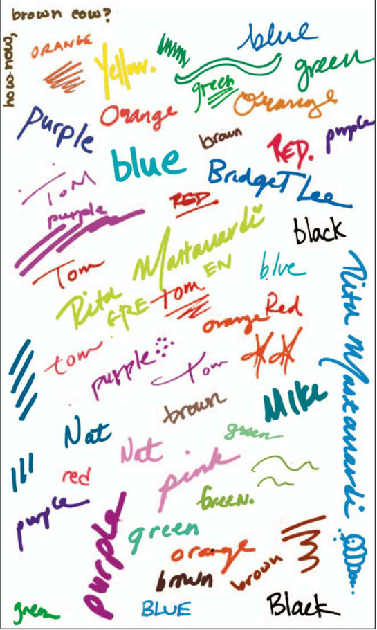
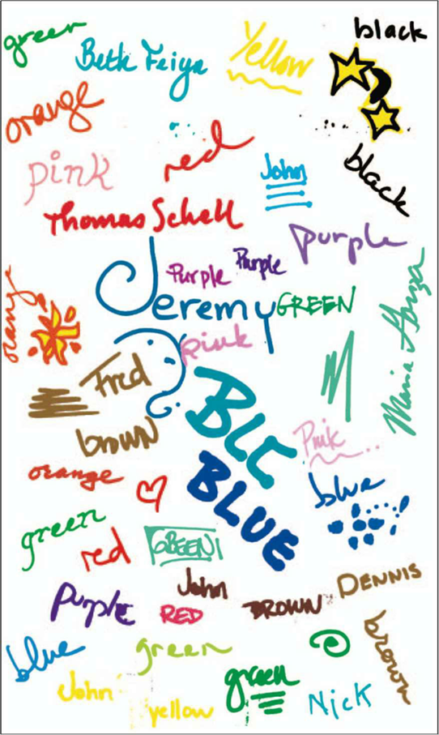

EL&IC - Chương 3 (2)
GOOGOLPLEX (tiếp)
Ngay khi Mẹ đi làm, tôi chuẩn bị đồ và đi xuống cầu thang. “Cháu trông có vẻ khỏe hơn so với ngày hôm qua rồi đấy,” bác Stan nhận xét. Tôi bảo bác ấy đi mà lo việc của mình đi. Bác ấy phản ứng lại, “Xì.” Tôi bảo bác, “Thực ra thì cháu cảm thấy tệ hơn hôm qua đấy chứ.”
Tôi đi qua cửa hàng họa phẩm ở phố 93, và hỏi người phụ nữ đứng bên cửa rằng liệu tôi có thể nói chuyện với người quản lý không, đấy là điều mà Ba vẫn thường nói mỗi khi ông có một câu hỏi quan trọng. “Cô có thể giúp gì cháu nào?” cô ấy hỏi. “Cháu cần gặp người quản lý ạ,” tôi trả lời. Cô ấy nói, “Cô biết. Cô có thể giúp gì cho cháu.” “Cô rất đẹp ạ,” tôi nói với cô ấy, bởi vì cô ấy khá là béo, nên tôi nghĩ đó sẽ là một lời ngợi khen tuyệt vời, và sẽ khiến cô ấy có thêm cảm tình với tôi, cho dù trên thực tế thì tôi là người đàn ông hấp dẫn nhất. “Cảm ơn cháu,” cô ấy nói. Tôi bảo cô ấy, “Cô có thể trở thành siêu sao đấy.” Cô ấy lắc đầu, kiểu như, Cái gì cơ? “Dù sao thì,” tôi nói, và tôi đưa cho cô ấy xem cái phong bì, và giải thích về chiếc chìa khóa, và về việc tôi đang cố tìm ra thứ mà chiếc chìa khóa này có thể mở ra, và về khả năng mà từ đen có thể mang một nghĩa nào đấy. Tôi muốn cô ấy cho tôi biết về những suy nghĩ của cô đối với từ đen, bởi vì cô ấy là một chuyên gia về màu sắc, “Ồ,” cô ấy nói, “cô không biết rằng cô là một chuyên gia về một vấn đề nào đó đấy. Nhưng có một điều mà mà cô có thể nói là khá thú vị khi thấy một người viết từ ‘đen’ bằng mực đỏ.” Tôi hỏi lại vì sao điều này lại thú vị, bởi vì tôi chỉ nghĩ rằng đó là một trong những chiếc bút mực đỏ mà Ba vẫn thường sử dụng khi đọc tờ New York Times. “Đến đây nào,” cô ấy nói, và cô dẫn tôi tới quầy trưng bầy khoảng mười loại bút khác nhau. “Cháu xem này.” Cô ấy chỉ cho tôi một tập giấy nằm bên cạnh quầy hàng.

“Thấy chưa,” cô ấy nói, “hầu như mọi người đều viết ra các màu sắc bằng chính thứ bút có màu mực đó.” “Tại sao ạ?” “Cô cũng không biết nữa. Đấy chỉ là một vấn đề tâm lý thôi, cô cho là vậy.” “Tâm lý có phải là tâm thần không ạ?” “Về cơ bản thì là như vậy.” Tôi nghĩ về điều đó, và tôi phát hiện thấy nếu như tôi thử một chiếc bút có mực màu xanh da trời, thì có lẽ tôi sẽ viết từ “xanh da trời.” “Việc mà ba cháu làm có vẻ không bình thường lắm, viết ra một màu bằng một cái bút có màu mực khác. Điều này có gì đó không được tự nhiên.” “Thật thế ạ?” “Điều này còn khó hiểu hơn,” cô ấy nói, và cô ấy viết cái gì đó ở trang giấy sau và bảo tôi đọc nó lên thật to. Cô ấy nói đúng, điều này chẳng tự nhiên một chút nào cả, bởi vì một phần trong tôi muốn gọi tên của màu sắc ấy, và phần còn lại thì muốn nói ra điều vừa được viết. Cuối cùng thì tôi chẳng nói gì.
Tôi hỏi cô ấy rằng theo cô thì điều này nghĩa là gì. “À,” cô trả lời, “cô không biết điều này có nghĩa là gì. Nhưng nhìn này, khi một ai đó thử một chiếc bút, thường thì người đó viết ra màu sắc của chiếc bút mà họ đang thử, hoặc tên của người đó. Vì thế từ ‘Black’ được viết bằng mực đỏ làm cho cô nghĩ rằng rất có thể Black là tên của một người đàn ông nào đó.” “Hoặc là tên của cô ấy.” “Và để cô nói thêm với cháu điều này.” “Vâng?” “Chữ b thì được viết hoa. Mà thường thì cháu không viết hoa chữ cãi đầu tiên của một màu sắc.” “Jose!” “Gì cơ?” “Black có nghĩa là Black!” “Cái gì?” “Black có nghĩa là Black! Cháu cần phải tìm người có tên là Black!” Cô ấy nói, “Nếu như có điều gì khác mà cô có thể giúp, cháu cứ nói cô nghe nhé.” “Cháu yêu cô lắm ạ.” “Cháu có phiền nếu thôi lắc cái lục lạc trong cửa hàng được không?”
Cô ấy đi ra chỗ khác, và tôi đứng lại đó một lúc, cố gắng bắt kịp đầu óc mình. Tôi lật qua các trang giấy trong khi suy nghĩ xem nếu là Stephen Hawking thì bác ấy sẽ làm gì tiếp đó.

Tôi xé trang giấy cuối cùng từ tập giấy và chạy đi tìm cô quản lý. Cô ấy đang giúp một ai đó với mấy cái cọ vẽ, nhưng tôi nghĩ nếu chen vào thì cũng chẳng bất lịch sự gì. “Đấy là ba cháu!” tôi bảo cô, chỉ ngón tay vào tên của ông. “Thomas Schell!” “Thật là một sự trùng hợp,” cô ấy nói. Tôi bảo cô ấy, “Vấn đề duy nhất là, ba cháu không hề mua họa phẩm.” Cô ấy nói, “Có thể là ông ấy có mua mà cháu không biết đấy thôi.” “Có thể là ba chỉ cần một cái bút.” Tôi chạy quanh cửa hàng, từ quầy này sang quầy khác, tìm hiểu xem liệu Ba có thử thêm sản phầm nào khác hay không. Điều này giúp tôi biết được rằng liệu Ba đã mua họa phẩm hay là Ba chỉ muốn mua bút mà thôi.
Tôi không thể tin vào điều mà tôi đã tìm ra.
Tên của Ba có ở khắp mọi nơi. Ba thử các bút đánh dấu và cọ dầu và bút chì màu và phấn và bút và phấn màu nước. Ba còn vẽ nguệch ngoạc cả tên mình trên một miếng nhựa, và tôi thấy một cái dao điêu khắc có dính phẩm vàng ở đầu dao, nên tôi biết đó là thứ mà Ba đã dùng để vẽ. Cứ như thể Ba đã cố gắng thực hiện một dự án nghệ thuật lớn nhất trong lịch sử ấy. Nhưng tôi không hiểu được: chuyện này hẳn đã phải xảy ra cả một năm về trước.
Tôi lại tìm cô quản lý. “Cô vừa nói là nếu cháu cần gì mà cô có thể giúp được, thì hãy cho cô biết.” Cô ấy nói, “Hãy để cô xong việc với vị khách này đã, và rồi cô sẽ tập trung toàn lực để hỗ trợ cháu.” Tôi đứng đó trong khi cô giải quyết công việc với người khách khác. Rồi cô quay sang tôi. Tôi nói, “Cô nói là nếu cháu cần cô giúp điều gì, thì cứ nói. À, cháu muốn xem toàn bộ hóa đơn của cửa hàng ạ?” “Để làm gì hả cháu?” “Cháu muốn biết ba cháu đến đây vào ngày nào và ông ấy đã mua những thứ gì.” “Tại sao?” “Để cháu có thể biết!” “Nhưng sao cháu lại muốn làm như thế?” “Ba của cô không chết, nên cháu không giải thích cho cô được.” Cô ấy nói, “Ba cháu mất rồi ư?” Tôi trả lời là đúng. Tôi bảo cô ấy, “Cháu vẫn thường tự cấu mình.” Cô ấy đi đến quầy thu ngân, mà thực ra là cái bàn để một cái máy tính, và gõ cái gì đó lên màn hình với các ngón tay của cô ấy. “Cháu đánh vần tên đấy như thế nào?” “S.C.H.E.L.L.” Cô ấy ấn vào một cái nút nào đó, và nhăn mặt, và nói, “Chẳng có gì cả.” “Chẳng có gì cả?” “Có thể là ông ấy không mua gì cả hoặc ông ấy đã trả tiền mặt.” “Mứt, khoan đã ạ.” “Cái gì?” “Oskar Schell... Con chào mẹ... Vì con vừa vào buồng tắm ạ ... Vì con để nó trong túi ... Uh-huh. Uh-huh. Một chút ạ, nhưng con có thể gọi lại cho mẹ khi con ra khỏi buồng tắm mà? Như là sau nửa tiếng ạ? ... Đấy là vấn đề riêng tư ạ ... Con đoán thế ... Uh-huh ... Uh-huh ... Được rồi mẹ ạ ... Hừm ... Con chào mẹ.”
“À, thế thì, cháu còn một câu hỏi nữa ạ.” “Cháu nói với cô hay nói với người trong điện thoại?” “Cô. Mấy tập giấy này đã dùng lâu chưa cô?” “Cô không biết đâu.” “Ba cháu mất hơn một năm nay rồi. Như thế là lâu rồi đúng không ạ?” “Chúng không ở đó lâu đến thế đâu.” “Cô có chắc chắn không ạ?” “Chắc đấy.” “Cô chắc ít hơn hay nhiều hơn bảy mươi nhăm phần trăm ạ?” “Nhiều hơn.” “Chín mươi chín phần trăm?” “Ít hơn.” “Chín mươi phần trăm?” “Khoảng đấy.” Tôi tập trung trong một vài giây. “Như thế là rất nhiều phần trăm.”
Tôi chạy về nhà và tiến hành một vài động tác tìm kiếm, và tôi tìm thấy 472 người có tên là Black ở New York. Có 216 địa chỉ khác nhau, bởi vì một vài người có tên Black đang sống cùng nhau, dĩ nhiên là vậy rồi. Tôi tính toán rằng nếu như tôi đi gặp hai người một vào mỗi thứ Bảy, mà có vẻ như là khả thi, cộng thêm cả các ngày nghỉ lễ, rồi trừ đi mấy ngày diễn vở Hamlet và các thể loại khác, như là tham gia buổi hội nghị về khoáng sản và triển lãm sưu tập tiền xu chẳng hạn, thì tôi mất gần ba năm mới có thể gặp hết bọn họ. Nhưng tôi không tài nào sống nổi qua ba năm trời mà không có được câu trả lời. Nên tôi viết một bức thư.
Cher[1] Marcel,
Allô[2]. Tôi là mẹ của Oskar. Tôi đã cân nhắc rất lâu, và đi đến quyết định rằng việc Oskar tham gia các buổi học tiếng Pháp không hẳn là điều cần thiết, vì thế thằng bé sẽ thôi gặp thầy vào các ngày Chủ nhật như hiện nay. Tôi rất cảm ơn thầy vì tất cả những gì mà thầy đã dạy cho Oskar, mà cụ thể ở đây là thì điều kiện, mà theo tôi thấy là rất kỳ cục. Dĩ nhiên, thầy không cần phải gọi điện cho tôi nếu Oskar không đến lớp, bởi vì tôi đã biết điều này rồi. Ngoài ra, tôi sẽ vẫn tiếp tục gửi séc thanh toán cho thầy, bởi vì thầy là một người tử tế.
Votre ami dévouée[3],
Mademoiselle[4] Schell
Đấy là một kế hoạch vĩ đại của tôi. Tôi sẽ có cả ngày thứ Bảy và ngày Chủ nhật để tìm những người có tên Black và tìm hiểu xem họ có biết gì về chiếc chìa khóa được đặt trong cái lọ hoa nằm trên nóc tủ của Ba hay không. Và chỉ trong vòng một năm rưỡi là tôi có thể biết được mọi thứ. Hoặc là ít nhất tôi cũng có thể lập ra một kế hoạch khác.
Dĩ nhiên là tôi muốn nói chuyện này với Mẹ vào buổi tối tôi ra quyết định sẽ truy tìm cái ổ khóa, nhưng thật ra tôi không thể. Không phải vì tôi nghĩ rằng tôi sẽ gặp rắc rối to vì đã lùng sực khắp mọi nơi, hay vì tôi sợ Mẹ sẽ phát cáu về chiếc lọ hoa, hay là tôi đang giận dỗi gì Mẹ vì Mẹ đang dành quá nhiều thời gian để cười đùa với chú Ron trong khi đáng lý ra Mẹ phải dành nhiều thời gian cho Lệ Hồ hơn mới phải. Tôi không tài nào giải thích nổi, nhưng tôi chắc rằng Mẹ không biết gì về cái bình hoa cả, về cái phong bì, hoặc về chiếc chìa khóa. Cái ổ khóa dường như là chuyện của riêng mình tôi và Ba vậy.
Vì vậy trong vòng tám tháng trời tôi tìm kiếm loanh quanh New York, và nếu Mẹ hỏi tôi đi đâu và khi nào về, thì tôi chỉ trả lời, “Con ra ngoài. Con sẽ về ngay.” Điều này thật lạ lùng, và đáng lẽ tôi nên cố gắng tìm hiểu rõ hơn, là Mẹ không bao giờ hỏi tôi thêm điều gì khác, dù là “Đi ra ngoài là đi đâu?” hay “Về ngay là khi nào?” dù bình thường Mẹ luôn quá quan tâm tới tôi, đặc biệt là kể từ khi Ba mất. (Mẹ đã mua cho tôi một chiếc di động nên chúng tôi có thể luôn tìm thấy nhau, và bảo tôi bắt taxi thay vì đi tàu điện ngầm. Mẹ còn đưa tôi đến cả đồn cảnh sát để lấy dấu vân tay, và điều này làm tôi mê tít.) Vậy thì tại sao Mẹ lại bắt đầu lờ tôi đi? Mỗi lần mà tôi rời khỏi căn hộ để tìm cái ổ khóa, tôi cảm thấy nhẹ nhàng hơn một chút, bởi vì tôi cảm thấy như đang tiến đến gần với Ba hơn. Nhưng cùng lúc ấy tôi lại cảm thấy nặng nề hơn hẳn, bởi vì có lẽ tôi đang dần rời xa Mẹ.
Ở trên giường tối đó, tôi không thể ngừng được việc suy nghĩ về chiếc chìa khóa, và làm sao mà cứ mỗi giây một cái ổ khóa lại được tạo ra ở New York. Tôi lôi cuốn Những Điều Xảy Ra Quanh Tôi từ khe hở giữa chiếc giường và bức tường, và lật qua các trang một hồi, ước sao cuối cùng tôi cũng có thể chìm vào giấc ngủ.
Sau một lúc rất lâu, tôi rời giường và đi tới tủ đồ nơi tôi giấu chiếc điện thoại. Tôi không hề động tới nó kể từ cái ngày tồi tệ đó. Chỉ đơn giản là không thể.
Rất nhiều lần tôi suy nghĩ về cái khoảng thời gian bốn phút rưỡi giữa thời điểm tôi về nhà và khi Ba gọi điện. Bác Stan vuốt má tôi, điều mà bác ấy không bao giờ làm trước đó. Tôi gọi thang máy lần cuối cùng. Tôi mở cửa căn hộ, vứt ba lô xuống sàn nhà, tôi đá văng giày ra, như thể mọi thứ trên đời này thật tuyệt, bởi vì tôi không biết được rằng trong thực tế mọi thứ đều thật sự rất kinh khủng, bởi vì làm sao mà tôi có thể biết được điều ấy? Tôi vuốt ve Buckminster và chỉ cho nó thấy rằng tôi yêu nó biết bao nhiêu. Tôi đi đến chỗ để chiếc điện thoại và kiểm tra các tin nhắn, và lần lượt nghe các tin thoại.
Tin nhắn thứ nhất: 8:52A.M.
Tin nhắn thứ hai: 9:12 A.M.
Tin nhắn thứ ba: 9:31 A.M.
Tin nhắn thứ tư: 9:46 A.M.
Tin nhắn thứ năm: 10:04 A.M.
Tôi nghĩ về việc gọi cho Mẹ. Tôi nghĩ về việc tìm chiếc máy bộ đàm và liên lạc với Bà nội. Tôi quay lại với tin nhắn đầu tiên và nghe lại lần nữa. Tôi nhìn vào đồng hồ. Lúc đó là 10:22:21. Tôi nghĩ đến việc bỏ chạy và không bao giờ nói chuyện với ai nữa. Tôi nghĩ đến việc trốn dưới gầm giường. Tôi nghĩ về việc chạy vào trung tâm thành phố và tự mình cứu lấy Ba. Và rồi chuông điện thoại reo lên. Tôi nhìn đồng hồ. Lúc ấy là 10:22:27.
Tôi biết tôi không bao giờ có thể để Mẹ nghe thấy những lời nhắn này, bởi vì bảo vệ Mẹ là một trong những raisons d'êetre quan trọng nhất đối với tôi, vì thế nên tôi đã lấy số tiền dùng cho trường hợp khẩn cấp từ ngăn tủ trên cùng của Ba, và tôi đi đến cửa hàng Radio Shack trên đường Amsterdam. Trong cửa hàng có một chiếc TV và tôi nhìn thấy tòa nhà đầu tiên sụp đổ. Tôi mua một chiếc điện thoại có kiểu dáng giống hệt với cái ở nhà và mang nó về và ghi lời chào giống với chiếc điện thoại cũ. Tôi bọc chiếc điện thoại cũ lại bằng cái khăn len mà Bà nội không bao giờ có thể hoàn thành bởi vì tôi, và tôi đặt nó vào trong một cái túi đựng thực phẩm, và tôi cất nó vào trong một cái hộp, và tôi đặt cái hộp bên trong một cái hộp khác, và tôi cất nó dưới hàng tá đồ đạc trong tủ quần áo của tôi, như là bộ dụng cụ làm trang sức của tôi và cuốn album sưu tầm các đồng tiền xu nước ngoài.
Vào đêm đó tôi quyết định rằng việc tìm kiếm chiếc ổ khóa là raison d'etre tối cao nhất của tôi vào lúc này — là raison chi phối tất cả những raison khác — tôi cần được nghe lại giọng nói của Ba.
Tôi tuyệt đối cẩn thận để không gây tiếng động khi lấy cái điện thoại ra khỏi các lớp bảo vệ. Cho dù tôi đã vặn tiếng xuống thật nhỏ, để tiếng nói của Ba không thể làm cho Mẹ thức giấc, thì tiếng nói ấy vẫn tràn ngập cả căn phòng, như cái cách mà ánh sáng vẫn bao trùm cả căn phòng mỗi khi trời chuyển tối.
Tin nhắn thứ hai. 9:12 A.M. Lại là ba đây. Con có đấy không? Xin chào? Xin lỗi nhé. Lúc này đang hơi bị. Nhiều khói. Ba cứ hi vọng là con sẽ. Ở. Nhà. Ba không biết là con đã biết về chuyện đang xảy ra chưa. Nhưng. Ba. Chỉ muốn con biết rằng ba vẫn ổn. Mọi thứ. Đều. Ổn cả. Khi con nghe được tin này, hãy gọi cho bà ngay nhé. Hãy báo với bà là ba vẫn ổn. Ba sẽ gọi lại trong vài phút nữa. Hi vọng là lính cứu hỏa sẽ đến sớm. Khi nào họ đến. Ba sẽ gọi lại.
Tôi bọc lại chiếc điện thoại với cái khăn quàng còn dang dở, và đặt lại nó vào trong cái túi, và cất cái túi vào trong cái hộp, và đặt vào trong một cái hộp khác, và giấu nó trong tủ quần áo dưới một đống đồ.
Tôi nhìn trân trân vào những ngôi sao giả như thể khoảnh khắc này là mãi mãi.
Tôi tưởng tượng ra các phát minh.
Tôi tự véo mình một cái.
Tôi nghĩ đến các phát minh.
Tôi ra khỏi giường, đi đến bên cửa sổ, và cầm cái máy bộ đàm. “Bà ơi? Bà, có nghe thấy cháu không? Bà ơi? Bà?” “Oskar à?” “Cháu ổn. Hết.” “Muộn rồi đấy. Có chuyện gì thế cháu?. Hết.” “Cháu đánh thức bà ạ? Hết.” “Không đâu. Hết.” “Bà đang làm gì thế? Hết.” “Bà đang nói chuyện với người thuê nhà. Hết.” “Ông ấy vẫn còn thức ạ? Hết.” Mẹ bảo tôi không được hỏi về người thuê nhà, nhưng nhiều khi tôi không ngăn mình được. “Ừ,” Bà nội trả lời, “nhưng ông ấy vừa đi rồi. Ông ấy phải đi làm vài việc. Hết.” “Nhưng bây giờ là 4:12 sáng cơ mà? Hết.”
Người thuê nhà sống trong nhà Bà nội kể từ khi Ba mất, và mặc dù hầu như ngày nào tôi cũng sang nhà Bà, tôi vẫn chưa được gặp ông ấy. Ông ấy luôn chạy đi làm việc gì đó, hoặc đang nghỉ ngơi, hoặc đang tắm, dù là khi ấy tôi không hề nghe thấy có tiếng nước chảy trong phòng tắm. Mẹ bảo tôi, “Bà nội có thể đang rất cô đơn, con có nghĩ thế không?” Tôi trả lời, “Ai cũng có thể đang rất cô đơn cả.” “Nhưng bà không có một người mẹ, hoặc các bạn như là Daniel và Jake, hoặc là cả Buckminster nữa.” “Đúng thế ạ.” “Nên có lẽ bà cần một người bạn tưởng tượng thì sao.” “Nhưng mà con là người thật,” tôi nói. “Ừ, và bà rất thích ở bên con. Nhưng con còn phải đến trường, và đến thăm các bạn, và tập kịch Hamlet, và tới các cửa hàng yêu thích—” “Mẹ làm ơn đừng gọi đó là cửa hàng yêu thích.” “Ý mẹ là con không thể ở bên bà mọi lúc được. Và có thể bà muốn có một người bạn bằng tuổi thì sao.” “Làm sao mẹ biết được người bạn tưởng tượng của bà cũng già giống như bà?” “Mẹ nghĩ là không.”
Mẹ nói, “Việc một người cần một người bạn thì chẳng có gì là sai trái cả.” “Mẹ đang nói về chú Ron đấy à?” “Không, Oskar ạ. Mẹ không nói thế. Và mẹ không thích giọng điệu ấy của con đâu.” “Con chỉ dùng một giọng duy nhất.” “Con đang dùng giọng điệu buộc tội với mẹ đấy.” “Con không biết nghĩa của từ ‘buộc tội,’ thì làm sao con có cái giọng ấy được?” “Con đang cố làm mẹ cảm thấy tồi tệ vì kết bạn mới.” “Không, con không thế.” Mẹ đưa bàn tay có đeo nhẫn lên vuốt tóc và nói, “Con biết đấy, mẹ đang thực sự nói về bà nội, Oskar ạ, nhưng đúng là, mẹ cũng cần có một người bạn nữa. Như thế thì có gì là không đúng đâu nào?” Tôi nhún vai. “Con có nghĩ là ba sẽ muốn mẹ kết bạn không?” “Con không dùng giọng điệu nào cả.”
Bà nội sống ở tòa nhà phía bên kia đường. Chúng tôi sống ở tầng năm và Bà ở tầng ba, nhưng mà thực ra cũng chẳng có khác biệt nào cả. Thỉnh thoảng Bà viết lời nhắn cho tôi từ khung cửa sổ, mà tôi có thể đọc được với cái ống nhòm, và có một lần Ba dành hẳn cả một buổi chiều để tạo ra một loại máy bay bằng giấy mà có thể bay từ căn hộ của chúng tôi sang chỗ Bà. Bác Stan thì đứng trên phố, cố mà nhặt cho bằng hết tất cả những nỗ lực không thành ấy. Tôi nhớ một trong những lời nhắn mà Bà viết cho tôi ngay sau khi Ba mất là “Đừng bỏ rơi bà.”
Bà ló đầu qua khung cửa sổ và ghé miệng thật sát vào máy bộ đàm, khiến cho giọng Bà trở nên rè rè. “Mọi chuyện vẫn ổn chứ? Hết.” “Bà ơi? Hết.” “Ừ. Hết.” “Tại sao các que diêm lại ngắn thế ạ? Hết.” “Ý cháu là sao? Hết.” “À, chúng luôn cháy rất nhanh. Mọi người luôn cuống cả lên và nhiều khi còn bị bỏng cả tay nữa ấy. Hết.” “Bà không được thông minh cho lắm,” Bà nói, luôn tự hạ thấp mình mỗi khi Bà sắp sửa đưa ra một nhận định nào đó, “nhưng mà bà nghĩ là những que diêm ấy phải thật ngắn để còn vừa với túi áo túi quần của ta nữa. Hết.” “Vâng,” tôi nói, tựa cằm vào lòng bàn tay, và cùi chỏ của tôi tì lên thành cửa sổ. “Cháu cũng nghĩ thế. Thế nếu như ta may cái túi cho to ra thì sao ạ? Hết.” “À, điều bà biết là, nhưng bà nghĩ rằng ta có thể sẽ rất vất vả khi thò tay vào đáy của một cái túi dài hơn. Hết.” “Vâng ạ,” tôi nói, đổi tay, bởi vì tay kia bắt đầu thấy tê, “thế còn một cái túi có thể di chuyển được thì sao ạ? Hết.” “Một cái túi có thể di chuyển được à? Hết.” “Vâng. Nó có thể chỉ ngắn như cái tất, nhưng có một cái khóa dán ở bên ngoài, nên bà có thể gắn nó vào bất cứ thứ gì. Nó không hẳn là túi quần áo, bởi vì nó ở bên ngoài quần áo, và bà có thể lấy nó ra được, mà có lẽ đấy là ưu điểm lớn nhất, vì bà có thể chuyển các thứ từ một bộ quần áo này sang bộ quần áo kia một cách dễ dàng, và bà có thể mang những thứ lớn hơn, vì bà có thể lấy cái túi này ra và dễ dàng thò tay vào trong túi. Hết.” Bà đặt tay lên cái áo ngủ nơi vị trí của trái tim và nói, “Rất hợp lý. Hết.” “Một cái túi di chuyển được có thể cứu rất nhiều ngón tay khỏi bị bỏng vì mấy que diêm ngắn xíu,” tôi nói, “và cả những đôi môi nứt nẻ vì không có Chapsticks[5] bên người. Và tại sao mấy thỏi kẹo cũng ngắn thế hả bà? Ý cháu là, có bao giờ bà ăn xong một thỏi kẹo mà lại không muốn ăn thêm nữa không? Hết.” “Bà không thể ăn sô cô la,” Bà nói, “nhưng bà hiểu điều cháu nói. Hết.” “Bà có thể có những chiếc lược dài hơn, và tóc bà luôn thẳng mượt, và cả những cái bút ông to hơn nữa—” “Bút ông?” “Bút chỉ dành cho các ông ấy ạ.” “À, ừ.” “Và bút ông lớn hơn thì dễ cầm hơn, trong trường hợp ngón tay của ta rất to, như của cháu ấy, và bà còn có thể huấn luyện bọn chim cứu bà biết lấy nấm từ trong cái túi di chuyển được nữa—” “Bà chẳng hiểu gì cả.” “Trên cái áo thức ăn chim ý ạ.”
“Oskar? Hết.” “Cháu ổn. Hết.” “Có chuyện gì thế, cháu yêu? Hết.” “Ý bà có chuyện gì là sao ạ? Hết.” “Sao thế cháu? Hết.” “Cháu nhớ ba. Hết.” “Bà cũng vậy. Hết.” “Cháu nhớ ba lắm. Hết.” “Bà cũng vậy. Hết.” “Lúc nào cũng nhớ. Hết.” “Luôn luôn. Hết.” Tôi không thể giải thích cho Bà hiểu rằng tôi nhớ Ba nhiều hơn, nhiều hơn Bà hay bất kỳ ai khác có thể nhớ tới Ba, bởi vì tôi không thể kể cho Bà nghe về chiếc điện thoại kia. Bí mật ấy là một cái hố trong lòng tôi mà tất cả hạnh phúc đều rơi tõm vào trong đó. “Bà đã bao giờ kể cho cháu nghe về chuyện ông nội luôn dừng lại và nựng bất kỳ con vật nào mà ông ấy nhìn thấy, kể cả khi ông đang vội chưa? Hết.” “Bà đã kể cho cháu nghe cả googolplex lần rồi ạ. Hết.” “Ồ, và bàn tay của ông thì xù xì và đỏ ửng sau mỗi lần điêu khắc nên đôi khi bà cứ trêu ông rằng chắc hẳn mấy bức tượng kia đã điêu khắc bàn tay ông ấy? Hết.” “Rồi ạ. Nhưng bà có thể kể lại lần nữa nếu bà muốn ạ. Hết.” Và bà kể lại câu chuyện cho tôi nghe.
Một chiếc xe cứu thương phóng qua trên con đường nằm giữa chúng tôi, và tôi hình dung ra người đang nằm trong đó, và điều đã xảy ra với người ấy. Có phải người ấy bị vỡ gót chân khi đang cố biểu diễn trò trượt ván? Hay là người ấy đang hấp hối vì vết bỏng ở cấp độ ba gây tổn thương tới chín mươi phần trăm cơ thể? Liệu có thể nào tôi quen biết người đó? Liệu có ai khi nhìn thấy chiếc xe cứu thương ấy và lo lắng không biết liệu có phải là tôi ở trong đó hay không?
Nếu trên đời này có một thứ thiết bị biết rõ tất cả những người mà ta biết thì sao nhỉ? Để rồi khi một chiếc xe cứu thương phóng như bay trên đường, một cái biển lớn trên nóc xe sẽ nhấp nháy dòng chữ
KHÔNG CẦN LO LẮNG! KHÔNG CẦN LO LẮNG!
nếu như chiếc máy của người ốm không phát hiện được chiếc máy của người quen ở gần đó. và nếu như nó thực sự phát hiện ra người quen, đèn bảng trên chiếc xe cứu thương sẽ chạy tên của người ốm, và cả
KHÔNG CÓ GÌ NGHIÊM TRỌNG! KHÔNG CÓ GÌ NGHIÊM TRỌNG!
hoặc, nếu người ốm đang trong cơn nguy kịch,
NGHIÊM TRỌNG! NGHIÊM TRỌNG!
Và ta có thể đánh giá được ta yêu quý người quen ấy đến nhường nào, và nếu chiếc máy của người nằm trong chiếc xe cứu thương nhận ra chiếc máy của người mà người ấy yêu thương nhất, hoặc là người mà yêu thương người ấy nhất, và người nằm trong xe cứu thương thực sự rất đau đớn, và có thể sẽ ra đi, thì cái xe cứu thương sẽ nhá lên dòng chữ
VĨNH BIỆT! TÔI YÊU BẠN! VĨNH BIỆT! TÔI YÊU BẠN!
Một điều dễ chịu khi nghĩ đến là có một ai đó có tên trong rất nhiều danh sách của mọi người, nên khi người đó sắp chết đi, và chiếc xe cứu thương chở người đó đang lao trên đường đến bệnh viện, trong suốt cả quãng thời gian ấy cái đèn sẽ nháy lên
VĨNH BIỆT! TÔI YÊU BẠN! VĨNH BIỆT! TÔI YÊU BẠN!
“Bà ơi? Hết.” “Ừ, cháu yêu. Hết.” “Nếu ông nội tuyệt vời thế, thì tại sao ông lại ra đi ạ? Hết.” Bà bước lùi lại để bà có thể biến mất khỏi khung cửa sổ. “Ông ấy không muốn đi. Nhưng ông ấy buộc phải đi. Hết.” “Nhưng tại sao ông lại phải đi ạ? Hết.” “Bà không biết. Hết.” “Chuyện ấy có làm bà giận không? Hết.” “Chuyện ông bỏ đi ấy à? Hết.” “Chuyện bà không biết tại sao ấy. Hết.” “Không. Hết.” “Buồn ạ? Hết.” “Có chứ. Hết.” “Bà đợi cháu nhé,” tôi nói, và chạy tới ngăn kéo và cầm lấy cái máy ảnh của Ông nội. Tôi mang nó ra cửa sổ và chụp ảnh Bà đứng bên cửa sổ. Ánh đèn chớp lóe lên phía trên con đường nằm giữa chúng tôi.
- Walt
- Lindy
- Alicia
Bà nói, “Bà hi vọng rằng cháu rồi sẽ yêu một điều gì đó cũng nhiều như bà yêu cháu. Hết.”
- Farley
- Thằng Ẻo Lả/ Kem Đánh Răng (tương đương)
- Stan
Tôi có thể nghe thấy tiếng Bà hôn vào những ngón tay mình và rồi sau đó là tiếng huýt gió.
- Buckminster
- Mẹ
Tôi hôn gió đáp lại.
- Bà nội
“Hết và tạm biệt,” một người trong chúng tôi nói.
- Ba
Chúng ta phải cần đến những cái túi lớn hơn nhiều, tôi nghĩ khi nằm trên giường, đếm số trong vòng bảy phút mà có thể đưa một người bình thường chìm vào giấc ngủ. Chúng ta cần rất nhiều túi, những chiếc túi đủ lớn cho cả gia đình chúng ta, và bạn bè, và cả những người không nằm trong danh sách của ta nữa, những người mà ta chưa bao giờ gặp mặt nhưng vẫn muốn bảo vệ họ. Chúng ta cần túi cho các khu dân cư và các thành phố, một cái túi lớn có thể chứa đựng cả trái đất này.
Tám phút ba mươi hai giây...
Nhưng tôi biết rằng sẽ chẳng bao giờ có một chiếc túi đủ lớn như vậy. Và cuối cùng, thì ai rồi cũng phải mất đi một ai đó. Chẳng có phát minh nào có thể ngăn nổi điều đó, và vì thế tôi cảm thấy, vào đêm ấy, mình giống như một con rùa mà mọi thứ trong vũ trụ này đều được đặt trên cái mai của nó.
Hai mươi mốt phút mười một giây...
Và về chiếc chìa khóa, tôi luồn nó vào dây cùng với chìa khóa nhà, và quàng vào cổ như cái mặt dây chuyền.
Và còn tôi, tôi thao thức hết giờ này sang giờ khác. Buckminster cuộn tròn bên cạnh tôi, và tôi tiến hành chia động từ[6] mất một lúc nên tôi sẽ không phải suy nghĩ thêm về mọi việc.
Je suis
Tu es
Il/Elle est
Nous sommes
Vous êtes
Ils/Elles sonts |
Tôi thức giấc vào giữa đêm đó, và chân Buckminster chạm vào mí mắt tôi. Nó ắt hẳn phải cảm nhận được cơn ác mộng của tôi đêm đó.
[1] cher: (tiếng Pháp) yêu quý, quý giá
[2] allô: (tiếng Pháp) xin chào
[3] Votre ami dévouée: (tiếng Pháp) người bạn thật sự của anh
[4] mademoiselle: (tiếng Pháp) cô, từ dùng để chỉ phụ nữ chưa chồng
[5] Chapsticks: một thương hiệu son dưỡng môi
[6] Bảng chia động từ theo tiếng Pháp. Lần lượt: je suis – tôi là, tu es – bạn là, il/elle est – anh ấy/cô ấy là, nous sommes – chúng tôi là, vous êtes – các bạn là
Comments